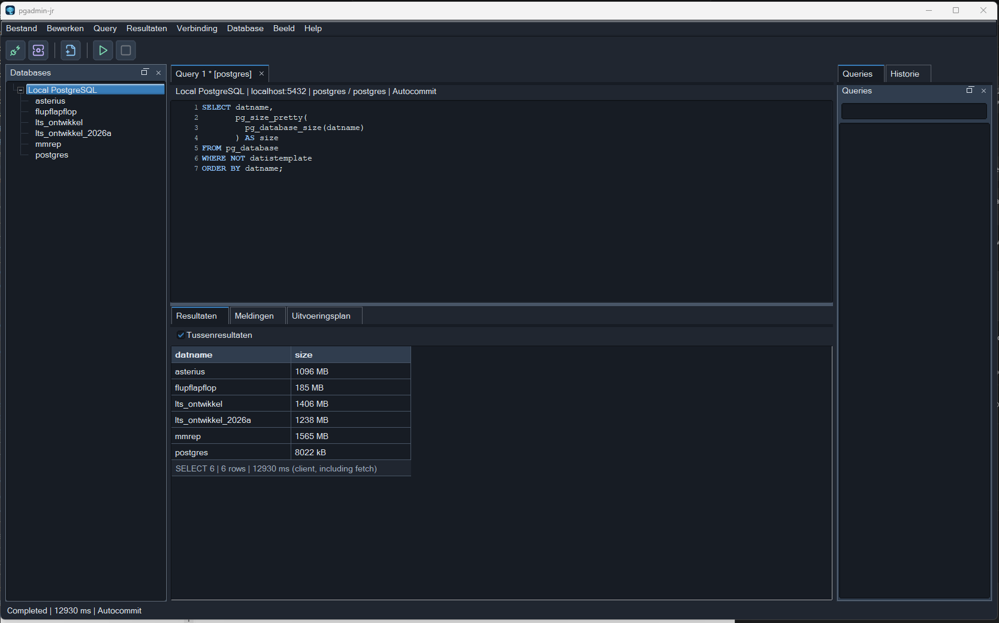

Windows
Installer or portable ZIP.
Install with the setup wizard, or extract the portable package and run it directly.
A native PostgreSQL workspace
Write SQL, explore your databases and get things done.
Penthario is a native alternative to pgAdmin 4 for everyday PostgreSQL work.
Windows · Linux · macOS Open source · C++ & FLTK

Why Penthario?
The project started with a simple frustration: waiting minutes for pgAdmin 4 to start before running a query. Penthario, formerly pgadmin-jr, is an independent open-source project focused on SQL, database browsing and everyday administration.
Built with FLTK — the Fast Light Toolkit. This cross-platform C++ GUI toolkit provides the native desktop interface on Windows, Linux and macOS. Penthario uses C++17, with startup speed and responsiveness guiding its design.
From connection to results
Keep your SQL and its results together. Each query tab has its own session, database target and transaction.

Save server profiles and browse schemas with separate groups for tables, views, materialized views, sequences, foreign tables, functions, procedures and trigger functions. Inspect columns, object properties and definition SQL.
Optionally remember passwords in your operating system’s credential vault.
Work in independent query tabs, each with its own database session and transaction. Use syntax highlighting, search and replace, completion and query history.
Name your tabs, organise saved queries into categories and restore your workspace.
See multiple statement results in a continuous overview. Resize columns, inspect large text or binary cells, copy results and export CSV or XLSX.
Stream full results directly to a file when they exceed the bounded on-screen preview. Inspect PostgreSQL EXPLAIN output in its own pane.
Back up and restore databases, create or drop databases, manage roles and database privileges, and run VACUUM, ANALYZE or REINDEX.
A dockable workspace, light and dark themes, and Dutch, English and German interfaces help you make it your own.
Choose your desktop
Packages and release notes are available on GitHub Releases. Choose the asset that matches your operating system and architecture.
First connection
postgres as the maintenance database.Documentation
Find your way around the application, customise its appearance, build from source or explore packaging and release details.